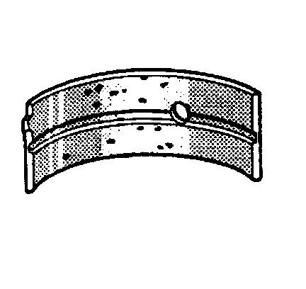
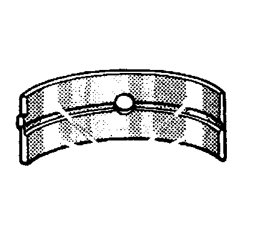

38. Piston, Connecting Rod, and Bearing Cleaning and Inspection
Piston, Connecting Rod, and Bearings Cleaning and Inspection
Piston, Pin, and Piston Rings
Important:
^ Replace pistons, pins, and connecting rods that are damaged or show signs of excessive wear.
^ The piston and pin are to be serviced as an assembly.
^ Do not wire brush any part of the piston.
^ Measurement of the components should be taken with the components at normal room temperature.
Clean the varnish and carbon from the piston (107) using cleaning solvent.
Caution: Refer to Safety Glasses Caution.
1. Dry the components with compressed air.
2. Clean the piston ring grooves with a suitable ring groove cleaning tool.
3. Clean the oil lubrication holes and slots.
4. Inspect the piston for the following conditions:
^ Cracks in the piston ring lands, the piston skirt, or pin bosses
^ Piston ring grooves for nicks, burrs, or warpage which may cause the piston ring to bind
MINOR imperfections may be removed from the piston with a fine file.
^ Eroded areas at the top of the piston (1)
^ Scuffed or damaged skirts (2)
^ Scoring to the piston pin bore (3) or piston pin
5. Insert the edge of the piston ring into the piston ring groove.
Roll the piston ring completely around the piston. If binding is caused by a distorted ring groove, MINOR imperfections may be removed with a fine file. If binding is caused by a distorted piston ring, replace the rings, as required.
6. Measure the piston ring side clearance with a feeler gage. If side clearance is not within specifications, try another piston ring. If the proper ring-to-groove clearance cannot be obtained, replace the piston and pin as an assembly. Refer to Engine Mechanical Specifications.
7. To determine piston pin-to-bore clearance, use a micrometer and measure the piston pin outside diameter (OD).
8. To determine the piston pin-to-bore clearance, use an inside micrometer and measure the piston pin bore inside diameter (ID).
9. Subtract the piston pin OD measurement from the piston pin bore ID measurement to determine pin-to-bore clearance. Refer to Engine Mechanical Specifications.
Measuring Piston Ring End Gap
Important:
^ Do not attempt to file the end of the piston ring to achieve the proper end gap clearance.
^ Measure the piston ring in the cylinder in which it will be used.
Place the piston ring into the cylinder bore 6.5 mm (0.25 in) below the top of the ring travel area. Both rings should be installed with the orientation marks facing the top of the piston.
1. Insert a feeler gage and measure the piston ring end gap. Refer to Engine Mechanical Specifications.
Connecting Rod and Bearings
Important:
^ The powdered metal connecting rod and cap are machined for proper clearances. The connecting rod and cap must be used as an assembly with no repair or modifications to either mating surface. Do not attempt to repair the rod or cap. If service is required, replace the rod and cap as an assembly.
^ Do not attempt to repair the bolt hole threads of the connecting rod.
Clean the connecting rod (105) and cap (103) in solvent.
Caution: Refer to Safety Glasses Caution.
1. Dry the components with compressed air.
2. Inspect the connecting rod for the following conditions:
^ Twisting (1)
^ Proper fit of the connecting rod and cap mating surfaces (2)
^ Nicks or gouges in the bearing bore (3)
^ Damage to the bearing locating slots (4)
3. Measure the connecting rod bearing bore for an out-of-round condition. Refer to Engine Mechanical Specifications.
4. To determine piston pin-to-connecting rod bore clearance, use a micrometer and measure the piston pin OD.
5. To determine the piston pin-to-connecting rod bore clearance, use a micrometer and measure the connecting rod pin bore (1) ID.
6. Subtract the piston pin OD measurement from the connecting rod pin bore ID measurement to determine pin-to-bore clearance. Refer to Engine Mechanical Specifications.

7. Inspect the connecting rod bearings for craters or pockets. Flattened sections on the bearing halves indicate fatigue.

8. Inspect the connecting rod bearings for excessive scoring or discoloration.
9. Inspect the connecting rod bearings for dirt or debris imbedded into the bearing material.

10. Inspect the connecting rod bearings for improper seating indicated by bright, polished sections of the bearing surface.
11. To determine the piston pin-to-bore clearance, use an inside micrometer and measure the piston pin bore ID.
12. Subtract the piston pin OD measurement from the piston pin bore ID measurement to determine pin-to-bore clearance. Refer to Engine Mechanical Specifications.